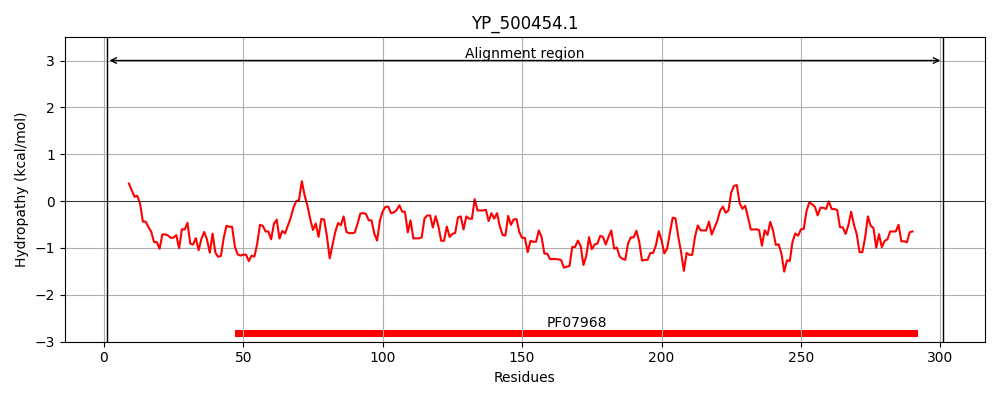
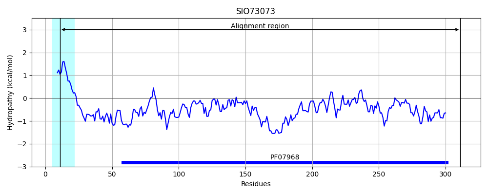
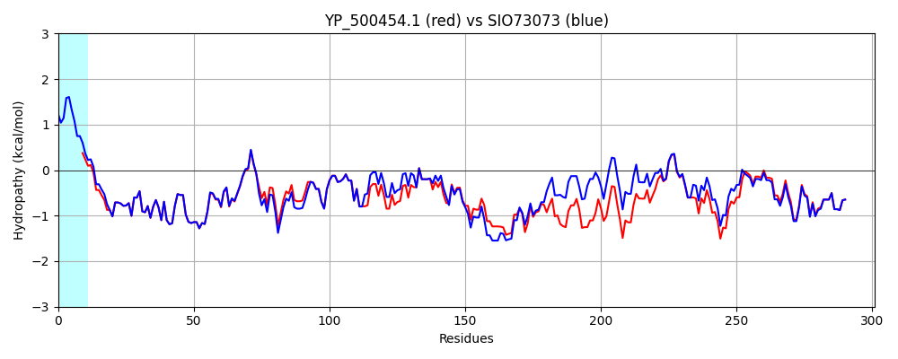

Hit Accession: SIO73073
Hit TCID: 1.C.3.4.4
Hit Description: gnl|BL_ORD_ID|20159 gnl|TC-DB|SIO73073.1|1.C.3.4.4 leukocidin LukP, equid specific leukocidin [Staphylococcus aureus subsp. aureus]
Mach Len: 301
e:0.000000
Query TMS Count : 0
Hit TMS Count: 1
TMS-Overlap Score: 0.000000
Predicted Substrates:CHEBI:25367;molecule
BLAST Alignment:
Score: 1465 , Bit scores: 568 bits, E-value: 0.0e+00, Alignment length: 301, Percentage identity: 91
Query: 1 MSVGLIAPLASPIQESRANTNIENIGDGAEVIKRTEDVSSKKWGVTQNVQFDFVKDKKYNKDALIVKMQGFINSRTSFSDVKGSGYELTKRMIWPFQYNIGLTTKDPNVSLINYLPKNKIETTDVGQTLGYNIGGNFQSAPSIGGNGSFNYSKTISYTQKSYVSEVDKQNSKSVKWGVKANEFVTPDGKKSAHDRYLFVQSPNGPTGSAREYFAPDNQLPPLVQSGFNPSFITTLSHEKGSSDTSEFEISYGRNLDITYATLFPRTGIYAERKHNAFVNRNFVVRYEVNWKTHEIKVKGHN 301
+SVGLIAPL SPIQESRANTNIENIGDGAEVIKRTEDVSSKKWGVTQNVQFDFVKDKKYNKDALI+KMQGFINSRTSF+DVKG GYELTKRMIWPFQYNIGLT+KDPNVSLINYLPKNKIET DVGQTLGYNIGGNFQSAPSIGGNG+FNYSK ISYTQK+YVSEV+KQNSKSV+WGVKAN F TPDG+ SAH+ YLFVQSPNG TGSAR++F PD+QLPPL+QSGFNPSFITTLSHEKG+SD SEFEISYGRNLDITYAT FPRTGIYAER+HNAFVNRNFVVRYEVNWKTHEIKVKGHN
Sbjct: 11 LSVGLIAPLVSPIQESRANTNIENIGDGAEVIKRTEDVSSKKWGVTQNVQFDFVKDKKYNKDALIIKMQGFINSRTSFTDVKGKGYELTKRMIWPFQYNIGLTSKDPNVSLINYLPKNKIETVDVGQTLGYNIGGNFQSAPSIGGNGAFNYSKKISYTQKNYVSEVEKQNSKSVEWGVKANSFATPDGELSAHETYLFVQSPNGLTGSARDFFVPDDQLPPLIQSGFNPSFITTLSHEKGTSDISEFEISYGRNLDITYATFFPRTGIYAERRHNAFVNRNFVVRYEVNWKTHEIKVKGHN 311 | Protein Hydropathy Plots: |
|---|
|  |  |
Pairwise Alignment-Hydropathy Plot:
|
|---|
|  |